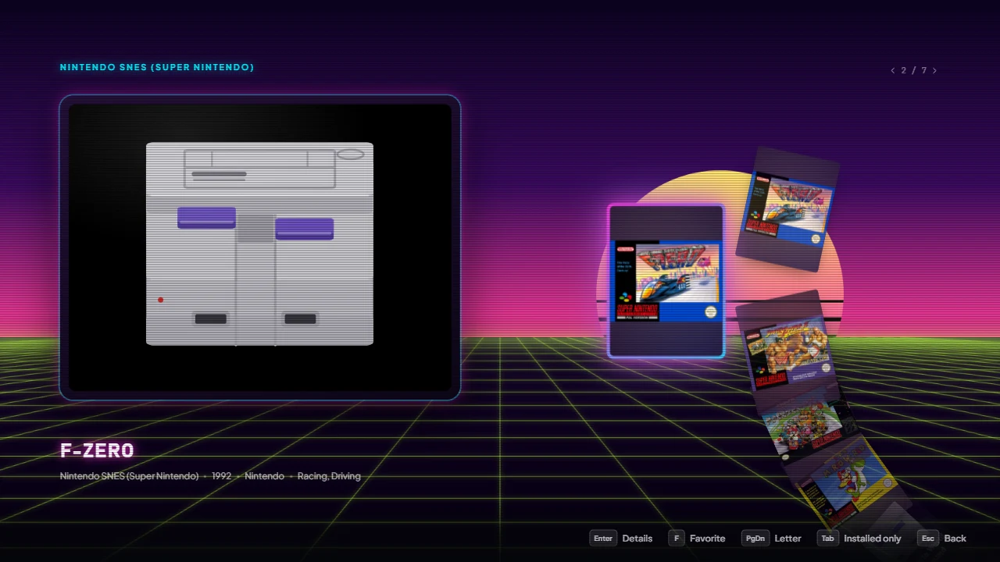

What a theme is
A theme is a folder: a theme.json that says what it changes, and if you like CSS, pictures, fonts, sounds and pages with scripts. The app keeps doing the work (the joypad, the games, installing, playing); the theme decides how it all looks and sounds.
Colors, fonts, corners, background, a picture per system, sounds, music, the app’s words, options for the user. No code: the editor writes it for you.
Every screen made of the elements you place where you want: lists of games as rows, grids or wheels, pictures, videos, texts, buttons. Layouts the user chooses among, and each system with its own colours and words.
Any CSS, on every element of your scenes and on parts with stable names. Each item of a list knows how far it is from the focus.
HTML pages with JavaScript: effects drawn under or over the screens, and pages placed in a scene. They run in a sandbox and talk to the app through rp.
Every layer is optional. A theme that says only "colors": { "accent": "#ff2bd6" } is a theme; everything it doesn’t say stays as the app draws it.


Good to know
- Your themes live in the app’s data folder, under
themes: Settings → Appearance → Themes folder opens it. - The examples come with the app and can’t be changed: Duplicate one to make it yours.
- Save a file and Desktop Mode changes at once, without closing it.